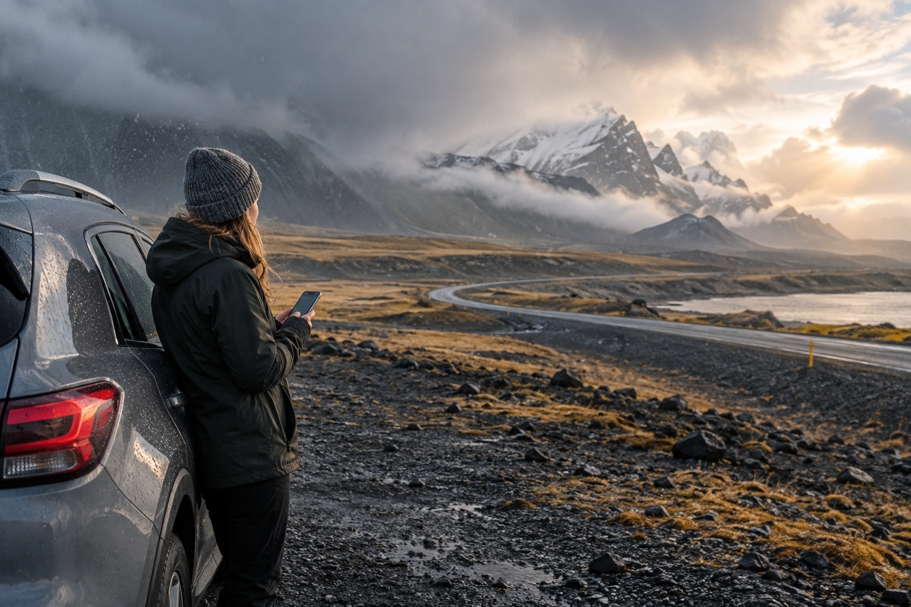
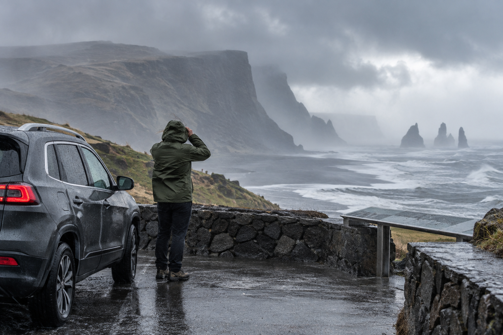
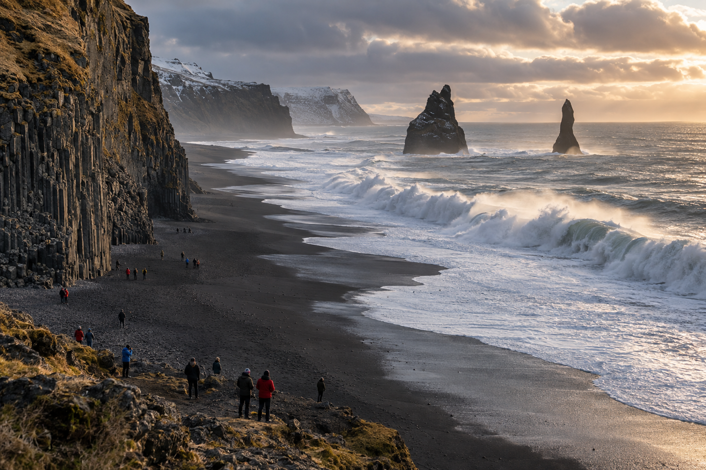

Iceland Travel Mistakes First-Time Visitors Should Avoid
Iceland looks simple to plan on a map. The main road circles the country, many famous sights sit close to roads, and English is widely used. That can make a first trip seem easier than it really is. The problems usually begin when travelers underestimate driving time, weather, wind, daylight, road conditions, or how much flexibility Iceland requires.
Most Iceland travel mistakes are avoidable. You do not need to be an experienced outdoor traveler, but you do need to plan for the country you are actually visiting rather than treating Iceland like a normal city break with a few scenic stops.
These are the mistakes I would avoid on a first Iceland trip, starting with the decisions that affect your entire route.
1. Trying to See Too Much of Iceland on One Trip

One of the biggest first-time mistakes is treating Iceland like a checklist.
Travelers often try to combine:
- ✓Reykjavík
- ✓Golden Circle
- ✓South Coast
- ✓Jökulsárlón
- ✓Snæfellsnes
- ✓North Iceland
- ✓Ring Road
- ✓Westfjords
into a trip that simply does not have enough days.
The result is usually:
- ✓Long drives
- ✓Short sightseeing stops
- ✓Frequent hotel changes
- ✓Less flexibility
- ✓Greater fatigue
Iceland rewards a slower route.
A traveler who explores three regions properly can have a stronger trip than someone who drives through six.
Why the Map Can Be Misleading
Places can appear close together on a map.
But the real day also includes:
- ✓Fuel stops
- ✓Meals
- ✓Parking
- ✓Walking
- ✓Weather delays
- ✓Photography
- ✓Hotel check-in
- ✓Unexpected stops
A route that looks like four hours of driving can become a full travel day once sightseeing is included.
Better Approach
Start with your number of full usable days.
Then choose the regions.
For most first-time visitors:
- ✓3 days = focused introduction
- ✓5 days = strong South Iceland trip
- ✓7 days = slower regional trip
- ✓10 days = sensible starting point for a first Ring Road circuit
For the full duration comparison, use How Many Days Do You Need in Iceland?
2. Planning the Ring Road With Too Few Days
The Ring Road is one of Iceland's most attractive road trips.
It is also frequently rushed.
Route 1 itself is roughly:
1,322 km
before adding sightseeing detours.
Your real trip may include additional driving for:
- ✓Golden Circle
- ✓Waterfalls
- ✓Glacier lagoon
- ✓Hotels
- ✓Mývatn
- ✓Towns
- ✓Restaurants
- ✓Fuel
- ✓Scenic stops
A seven-day Ring Road is technically possible.
That does not make it the strongest first-time plan.
What Goes Wrong
A rushed Ring Road can become:
drive → photo → drive → hotel → repeat
You reach many regions without having enough time to experience them.
It also leaves little margin for:
- ✓Strong wind
- ✓Poor road conditions
- ✓Fatigue
- ✓Activity delays
Better Approach
For a first Ring Road trip:
around 10 days
is a much stronger starting point.
If you have only seven days, consider a deeper regional trip instead.
You do not lose anything by saving the rest of Iceland for another visit.
3. Counting Hotel Nights Instead of Full Travel Days
A six-night Iceland booking does not automatically give you six sightseeing days.
Imagine:
Traveler A
Arrives at 7:00 AM and leaves at 8:00 PM.
Traveler B
Arrives at 10:00 PM and leaves at 7:00 AM.
Both booked the same number of nights.
Their usable travel time is completely different.
Better Approach
Count:
- ✓Full arrival time
- ✓Airport transfer
- ✓Rental pickup
- ✓Departure requirements
before deciding how much Iceland fits into the trip.
Do not build an itinerary around:
number of hotel nights alone.
4. Treating Arrival Day Like a Normal Road-Trip Day
Keflavík International Airport is outside Reykjavík.
After landing, you may still need to:
- ✓Clear immigration
- ✓Collect baggage
- ✓Pick up a rental car
- ✓Learn the vehicle
- ✓Get food
- ✓Drive to accommodation
Add:
- ✓Overnight flight fatigue
- ✓Jet lag
and arrival day can become much harder than expected.
Common Mistake
Landing in the morning and immediately planning:
- ✓Golden Circle
- ✓Several waterfalls
- ✓Long drive to Vík
because the day looks free on paper.
Better Approach
Keep arrival day lighter.
Use it for:
- ✓Reykjavík
- ✓Reykjanes
- ✓Groceries
- ✓Geothermal bathing
- ✓Short drive
depending on your arrival time and energy.
Start the main road trip after you are rested.
5. Planning a Long Drive Immediately Before Your Flight
The opposite mistake happens at the end of the trip.
Travelers sometimes spend their final night far from Keflavík and expect to drive several hours before an international flight.
That leaves little room for:
- ✓Weather disruption
- ✓Road problems
- ✓Rental return
- ✓Fuel stop
- ✓Airport check-in
Better Approach
Keep the final part of the trip geographically conservative.
Depending on your flight time, your final night may work better around:
- ✓Reykjavík
- ✓Reykjanes
- ✓Keflavík
rather than deep in another region.
Do not make your flight depend on a perfect final driving day.
6. Building Every Day Around Maximum Driving Distance
Google Maps tells you how long the road may take under certain conditions.
It does not tell you how tiring the entire day will feel.
A day containing:
- ✓Four hours driving
- ✓Six attractions
- ✓Lunch
- ✓Hotel check-in
- ✓Hiking
is not really a four-hour day.
Better Approach
Ask:
How much driving will still leave this day enjoyable?
Not:
How far can I technically reach?
For many first-time visitors, fewer stops and a shorter route produce a better experience.
7. Leaving No Buffer for Icelandic Weather

A tightly packed itinerary assumes every day behaves as planned.
Iceland does not.
Weather can affect:
- ✓Driving
- ✓Tours
- ✓Hiking
- ✓Roads
- ✓Visibility
- ✓Outdoor activities
SafeTravel warns that Icelandic weather can change quickly, with cold, wind, and rain sometimes occurring within the same day.
Common Mistake
Booking every hour around fixed activities.
Then one weather delay causes the rest of the trip to collapse.
Better Approach
Separate your plans into:
Must Do
Your highest priorities.
Would Like
Important but movable.
Optional
Stops you can remove without damaging the trip.
This makes it much easier to adapt.
8. Checking the Weather Once and Assuming It Covers the Whole Country
Iceland is small compared with many countries.
Its weather still varies considerably by region.
Conditions around:
- ✓Reykjavík
- ✓Vík
- ✓Vatnajökull
- ✓Akureyri
- ✓Mývatn
can be very different on the same day.
Common Mistake
Checking Reykjavík weather before leaving the hotel and assuming:
“Iceland looks fine today.”
Your destination may be experiencing:
- ✓Stronger wind
- ✓Rain
- ✓Snow
- ✓Poor visibility
Better Approach
Check the forecast for:
the region you are actually traveling through.
Do this:
- ✓The evening before
- ✓In the morning
- ✓Again during the day when conditions are changing
Use the Icelandic Meteorological Office for weather information and official warnings.
9. Ignoring Wind Because the Temperature Looks Mild
Wind is one of Iceland's most underestimated travel factors.
A forecast of:
8°C
may look harmless.
That does not tell you how conditions will feel in:
- ✓Strong wind
- ✓Rain
- ✓Exposed coastline
Wind also matters for driving.
The Icelandic Meteorological Office can issue specific warnings when gusts may be hazardous to wind-sensitive vehicles.
Better Approach
When checking weather, look at:
- ✓Wind
- ✓Rain
- ✓Temperature
together.
Do not use temperature alone to decide whether conditions are easy.
10. Assuming Summer Means Easy Weather
June, July, and August are excellent months for:
- ✓Road trips
- ✓Hiking
- ✓Ring Road
but summer does not guarantee:
- ✓Sunshine
- ✓Warm temperatures
- ✓Calm wind
- ✓Dry weather
You still need to plan for:
- ✓Rain
- ✓Strong wind
- ✓Cool conditions
Better Approach
Pack and plan for Icelandic summer, not mainland European summer.
Bring:
- ✓Waterproof outer layer
- ✓Warm layer
- ✓Suitable footwear
The complete gear list is covered in What to Pack for Iceland: First-Time Visitor Packing List.
11. Assuming Winter Conditions Only Happen in Winter
This is an important mistake.
SafeTravel specifically warns that winter road conditions can occur in:
- ✓Spring
- ✓Autumn
- ✓Winter
That means:
April does not automatically mean winter driving is finished.
And:
October does not automatically mean roads still feel like summer.
Better Approach
Choose your route from:
actual conditions
rather than the month name.
Your calendar tells you the season.
The road report tells you what you can safely do today.
12. Using Google Maps as Your Only Road-Condition Source
Google Maps is excellent for:
- ✓Navigation
- ✓Distance
- ✓General route planning
It is not the final authority on whether an Icelandic road is:
- ✓Closed
- ✓Icy
- ✓Impassable
- ✓Dangerous
SafeTravel explicitly cautions that navigation apps may not always reflect closed or impassable roads.
Better Approach
Use different tools for different jobs.
Navigation
Use your normal map application.
Road Conditions and Closures
Use the official Icelandic Road and Coastal Administration traffic information.
Weather
Use the Icelandic Meteorological Office.
Safety Alerts
Use SafeTravel.
Do not ask one app to answer all four questions.
13. Ignoring a Road Closure Because the Route Looks Fine
If an Icelandic road is officially closed:
do not drive around the barrier.
SafeTravel states that roads are not closed without an urgent reason.
A road may look normal where you are standing while conditions farther ahead are:
- ✓Impassable
- ✓Snow-covered
- ✓Flooded
- ✓Dangerous
Better Approach
Respect:
- ✓Closure signs
- ✓Barriers
- ✓Official road information
Turn around and change the plan.
A missed attraction is cheaper than:
- ✓Vehicle damage
- ✓Rescue
- ✓Injury
14. Renting the Cheapest Car Before Choosing Your Route
Travelers sometimes book a rental car first because they find a good price.
Only later do they plan where they want to drive.
That reverses the correct order.
Your route and season should determine the vehicle.
A Small Car May Be Perfectly Suitable For:
- ✓Reykjavík
- ✓Golden Circle
- ✓Normal paved roads
- ✓Many summer South Coast trips
It May Not Suit:
- ✓Certain Highland routes
- ✓F-roads
- ✓Routes requiring greater clearance or capability
Better Approach
Decide:
- ✓Season
- ✓Route
- ✓Road types
- ✓Vehicle
Then book.
Do not rent a large 4WD simply because you are visiting Iceland either.
Pay for the vehicle the trip actually needs.
15. Assuming Every 4WD Can Handle Every F-Road
This is a dangerous misunderstanding.
SafeTravel specifically warns that:
not all 4WD vehicles are suitable for all F-roads.
Some Highland roads may suit a normal medium-sized 4WD.
Others may require:
- ✓Larger vehicle
- ✓Greater ground clearance
- ✓Specialized equipment
Some routes also include:
unbridged river crossings.
Better Approach
Never ask only:
“Is this car 4WD?”
Ask:
- ✓Is this specific vehicle allowed?
- ✓Is the road open?
- ✓What conditions are reported?
- ✓Are river crossings involved?
- ✓Does the rental agreement permit the route?
The vehicle badge alone does not answer these questions.
16. Assuming F-Roads Open on a Fixed Date
Travelers sometimes plan:
“We arrive June 10, so the Highlands should be open.”
That is not how it works.
Roads open according to:
- ✓Snow
- ✓Ground conditions
- ✓Weather
- ✓Safety
SafeTravel says Highland F-roads are commonly closed from around:
mid-September until June or July.
But there is no universal opening date.
Better Approach
If Highlands access is essential, plan the trip in a stronger seasonal window and check the actual road shortly before driving.
July and August generally provide much more reliable planning conditions than early June.
17. Treating an F-Road Like an Ordinary Gravel Road
An F-road is not simply:
“a road with some gravel.”
Highland routes can involve:
- ✓Rough surfaces
- ✓Narrow sections
- ✓Potholes
- ✓Steep terrain
- ✓River crossings
- ✓Rapid weather changes
Some are considerably harder than others.
Better Approach
Research the specific F-road, not F-roads as one category.
If the route exceeds:
- ✓Your driving experience
- ✓Your vehicle
- ✓Your comfort level
choose another route or a guided trip.
18. Attempting a River Crossing Because Another Car Did It
This is one of the highest-risk Highland mistakes.
A river crossing that worked:
- ✓Yesterday
- ✓This morning
- ✓For a larger vehicle
may not be suitable for you.
SafeTravel notes that river:
- ✓Depth
- ✓Current
can change and that rivers can become impassable.
It also warns that normal vehicle insurance does not cover damage caused during river crossings.
Better Approach
If you are uncertain:
do not cross.
Turn around.
A missed destination is insignificant compared with losing a rental vehicle in a river.
19. Confusing F-Road Driving With Off-Road Driving
They are not the same.
Driving on a legal F-road is still driving on a road.
Driving:
- ✓Across moss
- ✓Across open land
- ✓Away from an established road or track
is off-road driving.
SafeTravel states that off-road driving is strictly forbidden.
Why This Matters
Icelandic landscapes can be extremely fragile.
Vehicle damage to:
- ✓Moss
- ✓Soil
- ✓Vegetation
can remain visible for a very long time.
Better Approach
Stay on legal roads and designated tracks.
Do not follow tire marks across open land simply because another driver has already done it.
20. Stopping on the Road for Photographs
Iceland creates constant:
“stop the car!”
moments.
That does not mean you can stop anywhere.
SafeTravel specifically warns against stopping:
- ✓In the road
- ✓On unsafe road shoulders
for photographs.
Common Problems
Other drivers may not expect a stopped vehicle around:
- ✓Blind corner
- ✓Hill
- ✓Narrow road
Better Approach
Continue until you find:
- ✓Designated parking
- ✓Viewpoint
- ✓Safe pull-off
The photograph can wait.
21. Watching the Landscape Instead of the Road
This sounds obvious until you drive through Iceland.
The scenery can be distracting.
Mountains, waterfalls, horses, coastline, and glaciers may appear directly beside the road.
SafeTravel specifically reminds visitors that Iceland's landscape can pull the driver's attention away from driving.
Better Approach
The driver drives.
The passenger looks.
If the driver wants the photograph:
stop somewhere safe first.
22. Driving Too Fast on Gravel
The posted speed limit is not a target.
SafeTravel lists the normal general limits as:
- ✓50 km/h in urban areas
- ✓80 km/h on rural gravel roads
- ✓90 km/h on rural paved roads
unless signs say otherwise.
But those limits assume suitable conditions.
Gravel Changes Vehicle Grip
The transition from:
paved road → gravel
can cause loss of grip if you enter too quickly.
Loose gravel also increases the risk of:
- ✓Skidding
- ✓Stone damage
Better Approach
Slow down before the surface changes.
Drive according to:
- ✓Visibility
- ✓Weather
- ✓Surface
not simply the maximum allowed speed.
23. Driving at the Speed Limit in Bad Conditions
A 90 km/h speed limit does not mean 90 km/h is safe during:
- ✓Strong wind
- ✓Ice
- ✓Snow
- ✓Heavy rain
- ✓Poor visibility
SafeTravel specifically tells drivers to adjust speed to conditions.
Better Approach
Think of the posted number as:
the maximum under suitable conditions.
Not:
the speed you are expected to maintain.
24. Underestimating Single-Lane Bridges
Single-lane bridges remain part of Icelandic road travel.
Drivers need to:
- ✓Slow down
- ✓Check approaching traffic
- ✓Yield appropriately
SafeTravel advises slowing to:
50 km/h
when approaching these bridges and giving way according to who arrives first.
Better Approach
Start slowing early.
Do not race another vehicle to the bridge.
The few seconds you save are meaningless.
25. Assuming Iceland Has No Roadside Animal Risk
Sheep can appear close to roads, particularly in rural areas.
SafeTravel specifically warns drivers to slow down when animals are near the road because they can move suddenly.
Better Approach
When you see:
- ✓Sheep
- ✓Horses
- ✓Other livestock
near the road:
slow down and watch carefully.
Do not assume the animal will stay where it is.
26. Forgetting That Headlights Are Required
Iceland requires vehicle lights to be on:
all year.
SafeTravel warns that the car's automatic light setting may not be enough to ensure the correct lights are on.
Better Approach
When collecting the rental car:
- ✓Learn the light controls
- ✓Confirm the correct setting
- ✓Do not assume “Auto” handles everything
This takes one minute and avoids unnecessary risk.
27. Using Your Phone While Driving
Navigation does not make handheld phone use safe.
SafeTravel states that using a phone or tablet while driving is illegal.
Better Approach
Before moving:
- ✓Set navigation
- ✓Connect charger
- ✓Mount the phone
If something needs changing:
- ✓Let the passenger do it
- ✓Or stop safely
Do not try to search for the next waterfall while driving.
28. Driving While Tired Because the Hotel Is Already Booked
This mistake often begins with an overpacked itinerary.
You:
- ✓Arrive late
- ✓Spend longer at stops
- ✓Still have two hours to the hotel
and continue because:
“We already paid for the room.”
SafeTravel specifically warns travelers not to drive when tired.
Better Approach
Avoid creating the problem in the first place.
Do not schedule repeated:
- ✓Very long drive days
- ✓Late-night arrivals
If you become too tired:
stop.
A prepaid room is not more valuable than safe driving.
29. Treating Long Summer Daylight as Unlimited Energy
Summer creates extremely long days.
That is useful.
It can also encourage bad planning.
Travelers may stay out until:
- ✓10 PM
- ✓Midnight
- ✓Later
then start another full road day the next morning.
After several days, fatigue builds.
Better Approach
Use long daylight as:
flexibility
not as permission to create a 16-hour sightseeing schedule every day.
The sun may still be up.
Your concentration may not be.
30. Choosing Your Iceland Route Before Choosing Your Season
A route that makes sense in July may be a poor plan in January.
Season affects:
- ✓Daylight
- ✓Road access
- ✓Hiking
- ✓Highlands
- ✓Weather risk
- ✓Driving pace
Better Approach
Plan in this order:
- ✓Choose season
- ✓Count full days
- ✓Choose regions
- ✓Choose transport
- ✓Build route
- ✓Book accommodation
For the complete sequence, use How to Plan a Trip to Iceland: Step-by-Step Guide.
The route should fit the season.
The season should not be forced to fit a route you copied from someone else's trip.
31. Treating Reynisfjara Like a Normal Beach

Reynisfjara is one of Iceland's most famous black-sand beaches.
It is also one of the places where visitors need to take safety instructions seriously.
The danger is not simply:
large visible waves.
Sneaker waves can travel much farther up the beach than the previous waves.
A calm-looking ocean does not guarantee the next wave will behave the same way.
Better Approach
At Reynisfjara:
- ✓Stay well back from the water
- ✓Never turn your back on the sea
- ✓Keep children beside an adult
- ✓Check the warning lights
- ✓Respect closures
Do not walk closer to the water because other visitors are doing it.
Their decision does not make the area safe.
32. Ignoring the Reynisfjara Warning Lights
There is a warning system at the beach entrance.
The exact condition should be checked when you arrive.
The current system uses:
Yellow
Moderate hazard.
Stay alert and cautious.
Orange
Considerable hazard.
Stay well away from the water.
Current official guidance calls for keeping at least:
25 metres from the sea
under orange conditions.
Red
Severe hazard.
The beach is closed.
Visitors should remain in the designated viewing area.
Better Approach
Look at the warning before walking down to the beach.
Do not decide safety from:
- ✓Weather app
- ✓Previous photos
- ✓What someone posted yesterday
Conditions can change quickly.
33. Turning Your Back on the Ocean for a Photo
This is an easy mistake.
You stand near the water.
Then turn around so someone can photograph:
- ✓You
- ✓Basalt columns
- ✓Sea stacks
while nobody watches the waves.
At Reynisfjara, that can be dangerous.
Better Approach
Stay far enough away that you do not need to react to the water.
Keep the ocean in your awareness.
A photograph is never worth moving closer to an unsafe shoreline.
34. Standing Under Cliffs Because the Sea Looks More Dangerous
Moving away from the water does not mean pressing against the cliff.
Reynisfjara also has a risk of:
falling rock.
Similar caution applies at other cliffs and steep rock faces around Iceland.
Better Approach
Follow:
- ✓Signs
- ✓Barriers
- ✓Local instructions
and avoid lingering directly beneath unstable rock faces.
You need distance from both:
- ✓Ocean
- ✓Cliff hazards
where instructions require it.
35. Climbing Over a Barrier for a Better View
Barriers can look overly cautious when the landscape appears calm.
They may be protecting visitors from:
- ✓Cliff edges
- ✓Unstable ground
- ✓Geothermal crust
- ✓Falling rock
- ✓Erosion
- ✓Dangerous waves
Common Mistake
Seeing someone else cross and thinking:
“It must be okay.”
It is not.
Better Approach
Stay behind:
- ✓Fences
- ✓Ropes
- ✓Barriers
- ✓Closure signs
Even when the best camera angle appears to be on the other side.
36. Standing Too Close to Cliff Edges
Iceland has many spectacular:
- ✓Cliffs
- ✓Canyons
- ✓Waterfall viewpoints
but exposed edges require caution.
Problems can include:
- ✓Loose rock
- ✓Wet ground
- ✓Ice
- ✓Strong wind
- ✓Erosion
A calm-looking viewpoint can change when a gust arrives.
Better Approach
Use designated paths and viewing areas.
Do not walk toward an exposed edge simply because you want:
“one photo without the railing.”
37. Treating Waterfall Paths Like Dry City Pavement
Paths around waterfalls can become:
- ✓Wet
- ✓Muddy
- ✓Slippery
- ✓Icy
Waterfall spray may affect the trail even when the weather itself is dry.
Better Approach
Wear footwear with:
- ✓Reliable grip
- ✓Weather protection
Slow down.
Do not rush around other visitors on wet surfaces.
38. Trying to Stay Completely Dry at Every Waterfall
Sometimes getting close means encountering spray.
The mistake is not getting wet.
The mistake is arriving without the equipment to handle it.
Better Approach
Keep:
- ✓Waterproof jacket
- ✓Waterproof trousers
- ✓Protected electronics
accessible.
If the spray becomes uncomfortable, step back.
You do not need to stand directly beside the water to prove you visited.
39. Walking Onto a Glacier Without a Guide or Proper Experience
A glacier may look like a large frozen hill from the parking area.
It is not.
Glaciers can contain:
- ✓Crevasses
- ✓Unstable ice
- ✓Slippery surfaces
- ✓Falling ice
- ✓Hidden hazards beneath snow
SafeTravel specifically advises against entering a glacier without appropriate:
- ✓Experience
- ✓Knowledge
- ✓Equipment
Better Approach
For a first trip, use a qualified guided glacier experience.
Do not copy people you see walking on the ice.
You do not know:
- ✓Their training
- ✓Their route
- ✓Current conditions
40. Walking Onto the Edge of a Glacier Because It Looks Flat
Even the accessible-looking edge of a glacier can change.
Current conditions at some glacier tongues have included:
- ✓Unstable ice
- ✓Calving
- ✓Deep glacial water
- ✓Rockfall
The safe access route can change over time.
Better Approach
Read current signs.
Stay off:
- ✓Unstable ice
- ✓Ice ridges
- ✓Closed routes
unless you are with an appropriate guide.
A photograph from slightly farther away is enough.
41. Entering an Ice Cave Independently
Ice caves are especially tempting because photographs make them look:
- ✓Solid
- ✓Permanent
- ✓Easy to access
They are none of those things.
Glacial ice moves and changes.
Possible hazards include:
- ✓Ice collapse
- ✓Falling blocks
- ✓Unstable roofs
- ✓Crevasses
- ✓Water
- ✓Changing temperatures
Better Approach
Only enter ice caves through an appropriately operated guided experience when conditions allow.
Do not enter a cave because:
- ✓Another group went inside
- ✓A map marks it
- ✓It looked safe last year
Glacier conditions change.
42. Assuming an Ice Cave Is Safe Because It Is Winter
Cold weather does not create an automatic guarantee.
Professional operators and park authorities may:
- ✓Change routes
- ✓Delay trips
- ✓Cancel access
when conditions are unsafe.
Better Approach
Accept cancellations.
Do not search for another unofficial entrance because:
“today was our only chance.”
A cancelled ice-cave tour is disappointing.
Entering unstable ice without proper assessment is far worse.
43. Treating Geothermal Areas Like Ordinary Hot Springs
Steam and bubbling water can look inviting.
Some Icelandic geothermal areas contain water or mud at temperatures:
at or above boiling point.
The ground itself can also be dangerous.
A thin surface crust can hide extremely hot material underneath.
Better Approach
Stay on designated paths and platforms.
Never:
- ✓Put your hand in unknown water
- ✓Step across geothermal ground
- ✓Test the temperature with your fingers
If bathing is permitted, it will be clearly established as a bathing area.
44. Stepping Off the Path at Geysir for a Better Photo
The marked paths at geothermal areas exist for both:
- ✓Safety
- ✓Conservation
At Geysir, visitors are required to remain on the marked walkways within the protected geothermal area.
Better Approach
Keep your:
- ✓Feet
- ✓Tripod
- ✓Children
on the designated route.
Do not step onto geothermal ground because it appears:
- ✓Dry
- ✓Firm
- ✓Inactive
The surface can be misleading.
45. Throwing Coins or Objects Into Hot Springs
Hot springs are not wishing wells.
Throwing:
- ✓Coins
- ✓Stones
- ✓Soap
- ✓Other objects
into geothermal features can damage protected natural formations and alter the site.
Better Approach
Leave the geothermal feature exactly as you found it.
Take:
- ✓Photographs
not geological souvenirs.
46. Assuming Every Natural Hot Spring Is Safe for Swimming
Iceland has many geothermal features.
That does not mean every warm-looking pool is suitable for bathing.
Possible problems include:
- ✓Dangerous temperatures
- ✓Sensitive environment
- ✓Private land
- ✓Prohibited access
- ✓Unsafe water conditions
Better Approach
Use established:
- ✓Swimming pools
- ✓Geothermal bathing areas
- ✓Legal natural bathing locations
where access and conditions are known.
Never enter water only because it feels warm when you touch the edge.
47. Starting a Hike Based Only on Its Distance
A 6 km Iceland hike is not automatically an easy two-hour walk.
Difficulty can depend on:
- ✓Elevation
- ✓Wind
- ✓Rain
- ✓Snow
- ✓Trail surface
- ✓River crossings
- ✓Visibility
Better Approach
Before hiking, check:
- ✓Distance
- ✓Elevation
- ✓Expected duration
- ✓Weather
- ✓Current trail conditions
- ✓Required equipment
The number of kilometres alone tells you very little.
48. Assuming a Marked Trail Is Always Safe in Every Condition
Marked trails are generally better than improvising your own route.
But weather can still make them:
- ✓Dangerous
- ✓Difficult
- ✓Closed
Current conditions matter.
As of September 2026, for example, SafeTravel is actively advising people not to hike part of the Fimmvörðuháls route because of dangerous conditions.
That type of alert is exactly why pre-trip research is not enough.
Better Approach
Check the trail again:
on the day you plan to hike.
Do not rely on a blog written months earlier.
49. Hiking Without Telling Anyone Where You Are Going
This becomes more important as the hike becomes:
- ✓Longer
- ✓More remote
- ✓More difficult
SafeTravel encourages travelers to share a travel plan with someone who can react if they do not return.
Better Approach
For remote hikes, share:
- ✓Route
- ✓Start point
- ✓Planned return time
- ✓Accommodation
- ✓Contact information
For more serious trips, use SafeTravel's travel-plan system.
50. Assuming Your Phone Will Always Have Coverage
Mobile coverage around much of Iceland is good.
It is not universal.
SafeTravel notes that limited coverage can occur in places such as:
- ✓Narrow canyons
- ✓Deep valleys
- ✓Highlands
Better Approach
Before a remote trip:
- ✓Download offline maps
- ✓Charge your phone
- ✓Carry a power bank
- ✓Share your plan
Do not build your safety system around:
“I can always Google it later.”
51. Letting Your Phone Battery Reach 5% on a Remote Day
Your phone may be doing several jobs:
- ✓Navigation
- ✓Weather
- ✓Road conditions
- ✓Booking information
- ✓Emergency communication
- ✓Camera
That makes battery management a safety issue, not just convenience.
Better Approach
Carry:
- ✓Charging cable
- ✓Car charger
- ✓Power bank
Keep the phone protected from:
- ✓Rain
- ✓Extreme cold
52. Chasing the Northern Lights Without Watching Road Conditions
The Northern Lights can encourage travelers to make poor decisions.
You see a gap in the cloud forecast.
Then drive:
- ✓Farther
- ✓Later
- ✓Onto unfamiliar roads
to chase it.
Better Approach
The aurora is optional.
Road safety is not.
Use a safe location and never let:
“maybe the lights are stronger 40 minutes away”
turn into unsafe night driving.
53. Parking on the Road to Watch the Northern Lights
Darkness can make roadside stops particularly dangerous.
Other drivers may not expect a stationary vehicle.
Better Approach
Use:
- ✓Proper parking
- ✓Viewpoints
- ✓Safe pull-offs
Do not stop in a traffic lane because the aurora suddenly appears.
If necessary, continue driving until you can stop safely.
54. Expecting the Northern Lights to Appear on Demand
You can choose:
- ✓Season
- ✓Location
- ✓Number of nights
You cannot schedule the aurora.
Seeing it requires the right combination of:
- ✓Darkness
- ✓Cloud conditions
- ✓Aurora activity
Better Approach
Give yourself several possible nights if aurora matters.
Treat it as:
a possible highlight
rather than the only measure of whether the trip was successful.
55. Booking a Major Non-Refundable Activity Every Day
Paid activities can be excellent.
A mistake is stacking the trip with:
- ✓Glacier hike
- ✓Whale watching
- ✓Lagoon
- ✓Horse riding
- ✓Ice cave
- ✓Northern Lights tour
on consecutive days with no flexibility.
What Goes Wrong
Weather can:
- ✓Delay
- ✓Move
- ✓Cancel
activities.
One change can affect the next booking.
Better Approach
Choose the experiences that matter most.
Leave breathing room between highly weather-dependent activities where possible.
56. Getting Angry When a Tour Is Cancelled for Weather
A cancelled Iceland activity can be frustrating.
Especially when you:
- ✓Flew a long way
- ✓Built the itinerary around it
But safety decisions are not made to ruin your holiday.
Better Approach
Expect the possibility before booking.
Understand:
- ✓Refund
- ✓Rescheduling
- ✓Cancellation terms
and keep one backup option.
If a glacier operator says conditions are unsafe:
believe them.
57. Choosing Tours Only by the Lowest Price
Two tours with similar titles may differ in:
- ✓Duration
- ✓Group size
- ✓Equipment
- ✓Guide qualifications
- ✓Transport
- ✓Cancellation terms
Better Approach
Compare:
- ✓What's included
- ✓Safety standards
- ✓Reviews
- ✓Meeting location
- ✓Age limits
- ✓Equipment
rather than choosing only the cheapest number.
This is especially important for:
- ✓Glacier
- ✓Ice cave
- ✓Highlands
activities.
58. Booking Premium Lagoons Because You Think They Are the Only Geothermal Experience
Premium geothermal lagoons can be excellent.
They are not the only place to experience Icelandic bathing culture.
There are also:
- ✓Municipal swimming pools
- ✓Regional pools
- ✓Other established geothermal baths
Better Approach
Choose a premium lagoon because you want that specific experience.
Do not book several expensive spas because you think:
“this is what you're supposed to do in Iceland.”
One premium experience plus local pools can provide better variety.
59. Forgetting Icelandic Pool Shower Etiquette
Public swimming pools have established hygiene rules.
Visitors are expected to wash properly before entering the pool.
Ignoring this can create an awkward experience and is disrespectful to local bathing culture.
Better Approach
Read and follow the instructions at the facility.
There is nothing complicated about it once you understand the process.
60. Arriving at a Rural Hotel Expecting Late-Night Restaurant Choices
Outside Reykjavík, services can be much more limited.
A rural area may have:
- ✓Few restaurants
- ✓Early kitchen closing times
- ✓Limited grocery options
Better Approach
Before a long road day, check:
- ✓Dinner options
- ✓Grocery stops
- ✓Hotel meal service
Carry basic food in the vehicle.
Do not wait until 9:30 PM in a small town to decide what you want for dinner.
61. Assuming Every Petrol Station Is Open Like a City Station
Automated fuel pumps are common and convenient.
But remote road-trip planning should not depend on:
“we will fill up somewhere later.”
Better Approach
Refuel before the tank becomes uncomfortably low.
Especially before entering:
- ✓Remote regions
- ✓Highlands
- ✓Long rural stretches
A half-full tank gives you more flexibility when the route changes.
62. Waiting Until the Fuel Warning Light Appears
In a city, this may be only a small inconvenience.
On an Iceland road trip, it can become a logistical problem.
Better Approach
Use a conservative rule:
When you have a convenient fuel stop and the next section is remote:
fill up.
There is little benefit in trying to use every final litre.
63. Not Knowing Your Rental Car's Fuel Type
Putting the wrong fuel into a rental car can become a very expensive mistake.
Better Approach
At pickup:
- ✓Confirm petrol/diesel/electric
- ✓Photograph or note the fuel type
- ✓Learn how to open the fuel door
Do this before your first fuel stop.
64. Packing as if Icelandic Summer Means Shorts and a Hoodie
The packing mistake is not failing to bring fashionable clothing.
It is failing to bring:
- ✓Waterproofing
- ✓Wind protection
- ✓Proper footwear
Summer can still be:
- ✓Wet
- ✓Windy
- ✓Cool
Better Approach
Use layers.
Keep the waterproof shell accessible every day.
The complete system is covered in What to Pack for Iceland: First-Time Visitor Packing List.
65. Leaving Waterproof Gear in the Hotel Because the Morning Is Sunny
This is how travelers get caught out.
Icelandic conditions can change during the day.
Better Approach
Keep small weather gear in:
- ✓Daypack
- ✓Car
including:
- ✓Waterproof shell
- ✓Hat
- ✓Gloves
You may never use it.
That is better than needing it and leaving it 100 km away.
66. Wearing Brand-New Hiking Boots on Day One
A new boot can look perfect in the shop and cause:
- ✓Blisters
- ✓Pressure points
after several hours.
Better Approach
Wear new footwear at home before the trip.
Test it with the same:
- ✓Socks
- ✓Insoles
you plan to use in Iceland.
67. Bringing Only One Pair of Shoes
This depends on your trip.
For an outdoor-heavy road trip, having a second lightweight pair can be extremely useful if your main footwear becomes:
- ✓Wet
- ✓Muddy
Better Approach
For many travelers:
- ✓One waterproof walking/hiking shoe
- ✓One lighter backup shoe
is enough.
You do not need five pairs.
68. Approaching Icelandic Horses Without Considering the Owner
Icelandic horses are appealing and often stand close to roads.
That does not make them public attractions.
They belong to someone.
Better Approach
Do not:
- ✓Enter private fields without permission
- ✓Climb fences
- ✓Feed horses without the owner's approval
If you want a proper horse experience, book:
- ✓A farm visit
- ✓Horse-riding experience
where interaction is managed appropriately.
69. Feeding Animals Because They Come Close
Feeding wildlife or livestock can:
- ✓Harm animals
- ✓Change behavior
- ✓Create unsafe interaction
Better Approach
Enjoy animals from an appropriate distance.
Do not use food to create:
- ✓Close photographs
- ✓Social-media videos
70. Walking Too Close to Nesting Birds
Cliffs and coastal areas can have sensitive nesting sites.
A visitor may think:
“It's only one photograph.”
The bird experiences repeated disturbance from many visitors.
Better Approach
Follow:
- ✓Closures
- ✓Marked paths
- ✓Local signs
Use a zoom lens instead of moving closer.
71. Flying a Drone Anywhere Because Iceland Looks Empty
Iceland's open landscapes make it look like an ideal place to fly a drone anywhere.
Rules vary by location.
Protected areas may have:
- ✓Complete bans
- ✓Seasonal restrictions
- ✓Permit requirements
- ✓Time restrictions
Rules may exist to protect:
- ✓Wildlife
- ✓Visitor experience
- ✓Safety
Better Approach
Check the rules for the specific location before launching.
Do not use one national-level drone summary as permission for every:
- ✓Waterfall
- ✓National park
- ✓Nature reserve
For example, drone use at Skógafoss is prohibited without permission from the relevant conservation authority.
72. Flying a Drone Near Birds for Better Footage
A drone can disturb wildlife even when the pilot feels:
“I am not that close.”
Protected-area restrictions often specifically aim to protect:
- ✓Nesting birds
- ✓Feeding areas
- ✓Other vulnerable wildlife
Better Approach
If animals or birds react to the drone:
you are already too disruptive.
Keep well away and follow local restrictions.
73. Walking Off the Trail to Avoid Other Tourists
This happens often at popular locations.
A traveler wants:
- ✓Clean photograph
- ✓Quiet viewpoint
so steps onto the surrounding:
- ✓Moss
- ✓Vegetation
- ✓Soil
Better Approach
Stay on:
- ✓Marked paths
- ✓Established surfaces
especially in protected and fragile areas.
One footprint may look insignificant.
Thousands are not.
74. Assuming Icelandic Moss Will Quickly Grow Back
Some Icelandic vegetation develops slowly under harsh conditions.
Damage can remain visible for years.
Better Approach
Never:
- ✓Drive over moss
- ✓Pull it up
- ✓Sit in closed restoration areas
- ✓Create your own shortcut
Photograph the landscape without becoming part of its damage.
75. Building Stone Cairns for Photos
Moving rocks and constructing new piles may appear harmless.
It can:
- ✓Disturb natural features
- ✓Alter the landscape
and in some environments, existing cairns may have legitimate navigation or cultural significance.
Better Approach
Do not rearrange Iceland's landscape for:
- ✓Photography
- ✓Social media
- ✓Personal markers
Leave stones where you found them.
76. Taking Rocks, Sand, Moss, or Other Natural Material Home
A natural area is not a souvenir shop.
Removing:
- ✓Rocks
- ✓Geological formations
- ✓Plants
may damage protected sites and can be prohibited.
Better Approach
Take:
- ✓Photographs
- ✓Memories
Buy a legal souvenir from a shop if you want something physical.
77. Leaving Food or Rubbish Behind Because “It Will Biodegrade”
An orange peel is still litter when you leave it in a protected landscape.
Food waste can also affect:
- ✓Animals
- ✓Visitor experience
Better Approach
Carry out everything you bring in.
Keep a small rubbish bag in the car.
Dispose of waste properly at:
- ✓Accommodation
- ✓Service stations
- ✓Designated bins
78. Assuming You Can Camp Anywhere
Iceland has broad public-access traditions.
That does not mean a campervan can simply stop anywhere overnight.
Current nature-conservation rules generally require:
- ✓Campervans
- ✓Caravans
- ✓Similar vehicles
to use organized campsites unless the landowner or rights holder gives permission.
Different rules apply to traditional tent camping depending on:
- ✓Location
- ✓Land
- ✓Protected-area rules
Better Approach
Plan legitimate overnight stops.
Do not use:
- ✓Tourist-attraction parking
- ✓Private land
- ✓Roadside pull-offs
as informal campsites unless explicitly permitted.
79. Assuming Every Open Landscape Is Public Property
Much of Iceland's countryside includes private land.
Public access rights do not give permission to:
- ✓Enter someone's garden
- ✓Cross cultivated fields carelessly
- ✓Drive private roads
- ✓Ignore gates and signs
Better Approach
Follow:
- ✓Marked paths
- ✓Access signs
- ✓Fences
- ✓Landowner instructions
Nature can feel remote and still belong to someone.
80. Taking Shortcuts Across Fences or Private Plots
Official access guidance asks walkers to avoid shortcuts through:
- ✓Fenced land
- ✓Pastures
- ✓Private plots
Better Approach
Use:
- ✓Gates
- ✓Stiles
- ✓Defined paths
where provided.
If access is unclear, do not create your own route.
81. Ignoring Temporary Closures Because the Attraction Is on Your Itinerary
Areas may close because of:
- ✓Erosion
- ✓Wildlife protection
- ✓Dangerous conditions
- ✓Volcanic activity
- ✓Trail damage
Better Approach
Treat a closure as:
the end of that plan for today.
Do not look for another gap in the fence.
Iceland has more than enough places to visit without entering a closed area.
82. Assuming a Viral Social-Media Location Is Automatically Legal to Access
Online videos can make a location look:
- ✓Public
- ✓Easy
- ✓Safe
without showing:
- ✓Private-land permission
- ✓Seasonal closure
- ✓Dangerous access
Better Approach
Before adding a social-media location, verify:
- ✓Legal access
- ✓Parking
- ✓Current condition
- ✓Whether the route crosses private property
Do not build the day's route around a location you cannot verify.
83. Copying Someone Else's Risky Photo
A photo of someone:
- ✓On a cliff edge
- ✓Beside a wave
- ✓On glacier ice
- ✓Across a barrier
does not prove the location is safe.
It only proves someone stood there long enough to take a photo.
Better Approach
Use:
- ✓Official paths
- ✓Viewpoints
- ✓Safety instructions
as your reference.
Not Instagram positioning.
84. Assuming Popular Attractions Cannot Be Dangerous
Large crowds can create a false sense of safety.
You may think:
“There are 200 people here, so nothing serious can happen.”
But risks such as:
- ✓Sneaker waves
- ✓Slippery surfaces
- ✓Cliff edges
- ✓Geothermal water
do not disappear because the location is popular.
Better Approach
Keep making your own safe decisions even in crowded places.
85. Turning the Trip Into a Race for Photographs
Iceland is easy to experience through a camera instead of with your own eyes.
That can lead to:
- ✓Unsafe positioning
- ✓Overpacked schedules
- ✓Less attention to weather
- ✓Constant stopping
Better Approach
Take the photograph.
Then put the camera away for a moment.
You do not need:
- ✓Drone footage
- ✓Tripod shot
- ✓Phone video
- ✓Portrait
- ✓Selfie
at every stop.
Sometimes simply being there is enough.
86. Forgetting That Conservation Rules Can Differ by Location
There is no single rule that applies identically to every:
- ✓Waterfall
- ✓Nature reserve
- ✓National park
- ✓Geothermal area
For example, drone restrictions vary substantially between protected areas.
Better Approach
Read the signs at each site.
Local rules override what you remember from another attraction.
87. Ignoring Rangers or Local Staff
Rangers and safety staff may know things you do not, including:
- ✓Current trail damage
- ✓Rockfall
- ✓Flooding
- ✓Wildlife activity
- ✓Sudden closure
Better Approach
If a ranger tells you not to continue:
do not debate the route using an old blog post.
Current local information is more useful.
88. Treating Safety Advice as Something for “Inexperienced Tourists”
Experienced travelers can make poor decisions too.
Familiarity with:
- ✓Mountains
- ✓Driving
- ✓Beaches
in another country does not automatically translate to Iceland.
Better Approach
Use your experience to make you:
more willing to check conditions
not less.
The goal is not to prove that you can handle Iceland.
The goal is to have a good trip and return safely.
89. Building the Budget With No Extra Margin
A first-time Iceland budget should not end at:
hotel + car + food + activities.
Small costs can include:
- ✓Parking
- ✓Road charges
- ✓Fuel
- ✓Insurance upgrades
- ✓Airport transfers
- ✓Mobile data
- ✓Laundry
- ✓Last-minute meals
- ✓Route changes
Individually, these may not look serious.
Together, they can push the trip well beyond your planned total.
Better Approach
Keep roughly:
10–15%
above your planned ground budget as a buffer.
Use a larger margin when:
- ✓Traveling in winter
- ✓Driving long distances
- ✓Traveling with children
- ✓Booking many non-refundable services
For detailed planning ranges, use Iceland Trip Cost: Budget for 3, 5, 7 and 10 Days.
90. Assuming Natural Attractions Mean Zero Sightseeing Costs
Many famous Iceland landscapes do not charge a traditional entrance fee.
That does not mean every stop costs nothing.
You may still pay for:
- ✓Parking
- ✓Visitor facilities
- ✓Local road charges
Better Approach
Add a small:
parking and local fees
category to your budget.
Do not let a series of small charges become an unexpected expense.
91. Comparing Rental Cars Only by the Headline Daily Price
A rental advertised at a low daily price may become much more expensive once you add:
- ✓Insurance
- ✓Airport fee
- ✓Additional driver
- ✓Child seat
- ✓Vehicle upgrades
Better Approach
Compare the:
final checkout total
for the same dates and similar protection.
Do not choose a rental based only on:
“from $X per day.”
92. Ignoring the Rental-Car Damage Excess
Insurance wording matters.
A policy may still leave you responsible for a large excess.
Other damage types may have:
- ✓Separate conditions
- ✓Exclusions
Better Approach
Before accepting or declining additional protection, understand:
- ✓What is covered
- ✓What is excluded
- ✓Maximum financial responsibility
- ✓Whether your own travel or card insurance overlaps
Do not make the decision at the desk while tired after a flight.
Read the terms before departure.
93. Assuming Credit-Card Rental Insurance Covers Everything
Credit-card benefits can be useful.
They are not universal.
Coverage may exclude:
- ✓Certain vehicle types
- ✓Specific road conditions
- ✓Particular damage categories
Better Approach
Read your actual policy.
Do not rely on:
“My card includes rental insurance.”
without understanding what that means in Iceland.
94. Forgetting Parking or Toll Payments Until After Returning the Car
Some parking systems and road charges use the vehicle's:
registration number.
If the charge is not paid correctly, the rental company may later add:
- ✓Administration fees
on top of the original amount.
Better Approach
When you collect the car:
- ✓Photograph the number plate
- ✓Learn how parking payments work
- ✓Check whether any planned road uses a toll
Settle charges before returning the vehicle where required.
95. Traveling With Only One Payment Card
Iceland is highly card-friendly.
That can create another mistake:
depending on one card for everything.
A card can be:
- ✓Blocked
- ✓Lost
- ✓Damaged
- ✓Declined
Better Approach
Travel with:
- ✓Main card
- ✓Backup card
Preferably keep them in separate places.
Also know your:
- ✓PIN
- ✓Available credit
This is particularly useful at automated fuel stations.
96. Having No Available Credit for Temporary Card Holds
Fuel stations, hotels, and rental companies may sometimes place temporary authorization holds.
Even when the money is later released, it can reduce your available credit temporarily.
Better Approach
Do not arrive with a card already close to its limit.
Keep financial room for:
- ✓Holds
- ✓Emergencies
- ✓Route changes
97. Booking the Cheapest Accommodation Without Checking Location
A hotel can look like a bargain until you realize it adds:
90 minutes of extra driving.
Then you also pay through:
- ✓Fuel
- ✓Time
- ✓Fatigue
Better Approach
Compare accommodation based on:
price + route location.
A slightly more expensive guesthouse on the correct route may provide better overall value.
98. Waiting Too Long to Book Rural Summer Accommodation
This can become a serious route problem.
In Reykjavík, there may be many accommodation alternatives.
In smaller areas, supply can be much more limited.
If the useful rooms sell out around:
- ✓Vík
- ✓Southeast Iceland
- ✓East Iceland
- ✓Mývatn
you may need to:
- ✓Pay much more
- ✓Change the route
- ✓Drive farther
Better Approach
For a fixed summer road trip, book the most route-critical rural nights early.
Flexible cancellation is useful when available.
99. Booking Every Hotel as Non-Refundable to Save a Small Amount
A non-refundable room can sometimes be cheaper.
But Iceland is a destination where plans may change because of:
- ✓Weather
- ✓Road closures
- ✓Activity cancellation
Better Approach
Compare the saving with the loss of flexibility.
A small discount may not be worth locking every night into a rigid route.
100. Forgetting to Check What the Hotel Price Includes
Two rooms with similar prices may not offer the same value.
Check:
- ✓Breakfast
- ✓Parking
- ✓Private bathroom
- ✓Kitchen
- ✓Cancellation
- ✓Final taxes and fees
Better Approach
Compare the complete stay.
A hotel with breakfast may be cheaper overall than a lower room rate plus breakfast for two people every morning.
101. Assuming Every Rural Hotel Serves Dinner Late
A countryside property may not have:
- ✓Restaurant
- ✓Late kitchen
- ✓Nearby takeaway
Better Approach
Check dinner arrangements before arriving.
If options are limited:
- ✓Eat earlier
- ✓Buy groceries
- ✓Reserve dinner
before continuing to the hotel.
102. Booking an Airport Hotel Without Checking Which Airport
Iceland has more than one airport.
For most international visitors, the main airport is:
Keflavík International Airport, KEF.
Reykjavík also has a domestic airport.
Better Approach
Before booking:
- ✓Hotel
- ✓Car
- ✓Transfer
confirm the exact airport code.
Do not assume:
“Reykjavík airport”
automatically means KEF.
103. Underestimating Time Needed to Return a Rental Car
Departure morning may involve:
- ✓Refueling
- ✓Unloading luggage
- ✓Vehicle inspection
- ✓Shuttle transfer
- ✓Airport check-in
Better Approach
Build rental return time into the departure plan.
Do not schedule the car return for the last possible minute.
104. Treating Travel Insurance as Optional Because Iceland Feels Safe
A destination can be safe overall while still exposing travelers to:
- ✓Illness
- ✓Injury
- ✓Cancellation
- ✓Delayed baggage
- ✓Rental issues
Outdoor activities also create different risks from a normal city holiday.
Better Approach
Consider travel insurance that fits:
- ✓Your nationality
- ✓Trip value
- ✓Activities
- ✓Rental setup
Read the policy before buying.
105. Assuming Every Outdoor Activity Is Covered by Your Insurance
A normal policy may treat:
- ✓Hiking
- ✓Glacier activities
- ✓Snowmobiling
- ✓Remote travel
differently.
Better Approach
If an activity is important to your trip, check whether your policy covers it.
Do this before paying for the activity.
106. Saving Emergency Information Only in an Online Bookmark
An emergency is a poor time to discover:
- ✓No signal
- ✓Dead battery
- ✓Lost browser tab
Better Approach
Save key emergency details:
- ✓In your phone contacts
- ✓In an offline note
and make sure your travel companion has them too.
107. Not Knowing Iceland's Emergency Number
The main emergency number in Iceland is:
112
Use it for serious emergencies involving:
- ✓Police
- ✓Fire
- ✓Ambulance
- ✓Search and rescue
Do not wait until an emergency happens to learn it.
108. Not Saving the Current Backup Emergency Number
This is particularly important for travelers visiting now.
SafeTravel currently warns that after Iceland's 2G/3G network shutdown, some travelers may experience problems connecting directly to 112.
If you are in Iceland and:
- ✓112 will not connect
- ✓Audio quality is poor
- ✓The call disconnects
the current backup number is:
+354 599 0112
Save it before your trip.
Your first choice in an emergency remains:
112.
109. Assuming One Failed 112 Call Means Help Is Unavailable
Iceland's emergency service also provides other contact methods.
Better Approach
If the normal call fails:
- ✓Try the backup number
- ✓Use 112 webchat if data is available
- ✓Use the 112 Iceland app where appropriate
Do not give up after one failed attempt.
110. Not Installing the 112 Iceland App Before Remote Travel
The official 112 Iceland app can help communicate with emergency services.
It can:
- ✓Open text communication
- ✓Send location information when contact is made
- ✓Help when describing an emergency by voice is difficult
Better Approach
Install and set it up before:
- ✓Hiking
- ✓Remote road trips
not while an emergency is happening.
111. Depending on the 112 App Instead of Basic Preparation
The app is useful.
It does not replace:
- ✓Appropriate clothing
- ✓Weather checks
- ✓Offline navigation
- ✓Travel plan
- ✓Power bank
Better Approach
Think of technology as:
another safety layer
rather than the complete safety system.
112. Traveling Into Remote Areas Without Telling Anyone
If something goes wrong, someone needs to know:
- ✓Where you went
- ✓When you should return
Better Approach
For remote activities, share:
- ✓Route
- ✓Vehicle
- ✓Accommodation
- ✓Expected return
with someone you trust.
For more serious trips, use official SafeTravel travel-planning tools.
113. Assuming Emergency Services Can Instantly Reach Every Location
Iceland has large:
- ✓Remote
- ✓Mountainous
- ✓Highland
areas.
Rescue may take time.
Better Approach
Preparation still matters even though Iceland has capable emergency services.
Carry enough:
- ✓Clothing
- ✓Food
- ✓Power
for the activity you are doing.
114. Panicking About Every Iceland Volcano News Headline
Iceland is volcanically active.
A news report about activity in one region does not automatically mean:
the entire country is unsafe or closed.
Volcanic hazards are geographic.
Better Approach
Check:
- ✓Exact location
- ✓Official hazard map
- ✓Current road closures
- ✓Civil protection instructions
before changing the whole trip.
115. Making the Opposite Mistake and Ignoring Volcanic Warnings
Volcanic activity should not cause unnecessary panic.
It should also not be treated as entertainment.
Closures can exist because of:
- ✓Lava
- ✓Gas
- ✓Ground cracking
- ✓Seismic activity
- ✓Rapidly changing hazards
Better Approach
Never enter a closed volcanic zone because:
“we can see other people there.”
Follow official access instructions.
116. Using an Old Volcano Blog Post for Current Access Information
Volcanic conditions can change much faster than normal travel information.
A guide written:
- ✓Last year
- ✓Last month
- ✓Even several days ago
may no longer describe safe access.
Better Approach
For volcanic areas, check:
- ✓Icelandic Meteorological Office
- ✓SafeTravel
- ✓Current road/access information
close to the visit.
117. Assuming No Visible Eruption Means No Volcanic Hazard
Volcanic monitoring continues between eruptions.
Hazards can involve more than visible lava.
Depending on the situation, authorities may monitor:
- ✓Earthquakes
- ✓Ground movement
- ✓Gas
- ✓Magma accumulation
Better Approach
Use the official hazard assessment.
Do not decide:
“nothing is erupting, so everything must be open.”
118. Planning a Reykjanes Stop Without Checking Conditions That Day
Reykjanes contains popular locations close to:
- ✓KEF
- ✓Reykjavík
which makes it easy to add on arrival or departure day.
Recent volcanic activity means current conditions need to be checked.
Better Approach
Before traveling into an affected area, verify:
- ✓Road access
- ✓Site access
- ✓Hazard warnings
that day.
Keep an alternative stop available.
119. Assuming Volcanic Activity Automatically Closes Keflavík Airport
A volcanic event in Iceland does not automatically mean:
KEF is closed.
Different eruptions produce different hazards.
Better Approach
If volcanic news appears before your flight:
- ✓Check the airline
- ✓Check the airport
- ✓Check official Icelandic updates
Do not cancel a trip based only on a dramatic social-media headline.
120. Planning a Solo Trip Exactly Like a Couple's Trip
Solo travel changes some practical decisions.
You have:
- ✓No second driver
- ✓No passenger checking navigation
- ✓No one immediately available if you slip or become ill
Better Approach
A solo road trip should be slightly more conservative about:
- ✓Driving hours
- ✓Remote hikes
- ✓Fatigue
There is no need to fear solo travel.
Just account for the fact that all responsibilities belong to you.
121. Driving Too Long Without a Second Driver
A couple may be able to switch drivers.
A solo traveler cannot.
Better Approach
Reduce daily driving before exhaustion becomes the problem.
Stop for:
- ✓Food
- ✓Short walks
- ✓Rest
Do not use caffeine to turn an unsafe driving day into a longer unsafe driving day.
122. Hiking Alone Without Sharing the Route
Solo hiking increases the importance of someone knowing your plan.
Better Approach
Share:
- ✓Trail
- ✓Start time
- ✓Expected return
and check current conditions before leaving.
For difficult remote hikes, consider whether going alone is appropriate at all.
123. Planning a Family Trip With Adult Driving Times
A four-hour scenic drive may feel very different with young children.
You may need extra stops for:
- ✓Toilets
- ✓Food
- ✓Movement
- ✓Clothing changes
Better Approach
Build shorter travel days.
Iceland can be excellent for families when the route is not rushed.
124. Packing Children's Spare Clothes Where You Cannot Reach Them
Children can get wet at:
- ✓Waterfalls
- ✓Beaches
- ✓Rainy viewpoints
Better Approach
Keep one complete dry outfit:
- ✓In the car cabin
- ✓Or easy-access luggage
not underneath every suitcase.
125. Assuming Every Activity Accepts Young Children
Activities may have:
- ✓Minimum age
- ✓Height requirement
- ✓Fitness requirement
This can apply to:
- ✓Glacier hikes
- ✓Horse riding
- ✓Boat trips
- ✓Adventure activities
Better Approach
Check requirements before building the itinerary around an experience.
126. Booking Expensive Activities for Children Who Will Not Enjoy Them
Parents sometimes feel they need to book every famous Iceland experience.
Children may enjoy:
- ✓Waterfalls
- ✓Pools
- ✓Beaches
- ✓Horses
more than a long premium excursion.
Better Approach
Match activities to:
- ✓Age
- ✓Interest
- ✓Energy
not social-media popularity.
127. Treating Reykjavík as if Local Culture Does Not Matter
Most Iceland travel focuses on landscapes.
You are still visiting someone's home.
Basic respect includes:
- ✓Following pool etiquette
- ✓Respecting private property
- ✓Disposing of rubbish properly
- ✓Following signs
- ✓Treating staff politely
Better Approach
Travel as a guest, not as if the whole country is an outdoor attraction built for visitors.
128. Expecting Loud, Highly Formal Service Everywhere
Service culture differs between countries.
A quieter or more direct interaction is not automatically:
- ✓Rude
- ✓Unfriendly
Better Approach
Do not judge every local interaction using the service norms of your home country.
Be polite and straightforward.
129. Forgetting to Remove Outdoor Shoes Where Requested
Some:
- ✓Guesthouses
- ✓Homes
- ✓Facilities
may ask guests to remove wet or dirty outdoor footwear.
Better Approach
Follow the property's instructions.
This is particularly reasonable after:
- ✓Mud
- ✓Snow
- ✓Rain
130. Treating Tap Water Like Something You Need to Avoid
Buying bottled water throughout the trip is usually unnecessary.
Iceland is known for good-quality tap water.
Better Approach
Carry a reusable bottle and refill from normal drinking-water taps.
If hot tap water has a sulfur smell in some areas, use the cold tap for drinking.
131. Buying Bottled Water at Every Stop
This costs more and creates unnecessary waste.
Better Approach
Use a reusable bottle.
Save purchased drinks for when you actually want something other than water.
132. Leaving the Car Running Unnecessarily
Do not treat the rental vehicle as a permanently running heated room.
Better Approach
Use the car efficiently.
Reduce unnecessary:
- ✓Idling
- ✓Fuel use
when parked safely.
133. Treating Iceland's Landscapes as Unlimited Tourist Space
Some locations receive enormous visitor pressure.
Small actions add up:
- ✓Walking off trail
- ✓Leaving rubbish
- ✓Parking badly
- ✓Entering closed areas
Better Approach
Use established:
- ✓Paths
- ✓Parking
- ✓Toilets
- ✓Campsites
This protects both:
- ✓Landscape
- ✓Future visitor access
134. Trying to Visit Every Famous Place Instead of Spending Locally
A road trip can become:
fuel station → attraction → hotel
with little interaction with local communities.
Better Approach
Where it makes sense, support:
- ✓Local cafes
- ✓Regional pools
- ✓Small museums
- ✓Local accommodation
- ✓Community businesses
You do not need to buy something everywhere.
The point is to experience more than the major photo stops.
135. Assuming Sustainable Travel Means Adding Complicated Rules to the Trip
Responsible Iceland travel is often simple.
You already make a major difference when you:
- ✓Stay on roads
- ✓Stay on trails
- ✓Use proper campsites
- ✓Take rubbish with you
- ✓Respect wildlife
- ✓Refill water bottles
- ✓Follow closures
Better Approach
Focus on practical behavior.
You do not need to make sustainability another complicated itinerary project.
Current Iceland Safety Note for 2026
Some information in Iceland changes faster than normal travel advice.
As of September 2026, travelers should be aware of two particularly important current issues.
Emergency Calling
SafeTravel currently lists an alternative emergency number because of Iceland's 2G/3G shutdown.
If calling:
112
fails, has poor audio, or disconnects, use:
+354 599 0112
as the backup number.
Save both before departure.
Reykjanes Volcanic Activity
The Icelandic Meteorological Office continues to monitor:
Svartsengi and the Sundhnúkur crater-row system.
Its latest published assessment says:
- ✓Ground uplift continues
- ✓Magma continues to accumulate
- ✓Seismic activity remains relatively low
- ✓A future magma intrusion and possible eruption remain plausible
- ✓Warning time could be short
This does not mean Iceland as a whole is closed.
It means travelers going to affected parts of Reykjanes should check current official conditions close to their visit.
This section should be reviewed whenever the article is updated.
The 10 Biggest Iceland Mistakes to Remember
If you forget everything else in this guide, remember these:
- ✓Do not try to see the whole country too quickly.
- ✓Do not ignore weather or road conditions.
- ✓Do not drive around closures.
- ✓Do not underestimate wind.
- ✓Do not treat Reynisfjara like a normal beach.
- ✓Do not enter glaciers or ice caves independently.
- ✓Do not drive off-road.
- ✓Do not plan long drives while tired.
- ✓Do not enter closed volcanic or natural areas.
- ✓Do not build a trip with no flexibility.
Avoiding these ten mistakes already removes many of the biggest first-time problems.
Final First-Time Iceland Checklist
Before leaving home, confirm each section.
Route
- ✓Number of full travel days is realistic
- ✓Regions fit the season
- ✓Daily driving is manageable
- ✓Final night does not create airport risk
Car
- ✓Correct vehicle for route
- ✓Rental terms checked
- ✓Insurance understood
- ✓Fuel type known
- ✓Plate number saved
- ✓Headlight controls understood
Weather
- ✓Icelandic weather source saved
- ✓SafeTravel saved
- ✓Official road-condition source saved
Clothing
- ✓Waterproof jacket
- ✓Waterproof trousers
- ✓Warm layers
- ✓Waterproof footwear
- ✓Hat
- ✓Gloves
Money
- ✓Main payment card
- ✓Backup card
- ✓PIN known
- ✓Emergency budget available
Accommodation
- ✓Correct dates
- ✓Correct locations
- ✓Cancellation terms understood
- ✓Dinner arrangements checked where needed
Activities
- ✓Requirements checked
- ✓Age limits checked
- ✓Cancellation terms checked
- ✓Appropriate clothing ready
Hiking
- ✓Current trail status checked
- ✓Weather checked
- ✓Offline map available where needed
- ✓Route shared for remote hikes
Emergency
- ✓112 saved
- ✓+354 599 0112 saved as current backup
- ✓112 Iceland app considered
- ✓Power bank packed
Nature
- ✓Stay on marked paths
- ✓Stay behind barriers
- ✓Do not drive off-road
- ✓Respect private property
- ✓Do not disturb wildlife
Airport
- ✓Correct airport confirmed
- ✓Rental return time included
- ✓Departure day kept realistic
- ↗
- ↗
- ↗
Frequently Asked Questions
Is Iceland safe for first-time visitors?
Yes, Iceland is a very manageable destination for first-time visitors when travelers respect weather, roads, natural hazards, and current safety information.
What is the biggest mistake tourists make in Iceland?
Trying to cover too much distance is one of the most common mistakes. It increases driving, fatigue, and pressure while reducing flexibility.
How many days should a first-time visitor spend in Iceland?
Five to ten full days works very well for many first trips. Around seven days is excellent for a regional trip, while roughly ten days is a stronger starting point for a first Ring Road circuit.
Is driving in Iceland difficult?
Normal main-road driving can be straightforward, but conditions may include strong wind, gravel, snow, ice, single-lane bridges, and rapid weather changes.
Is it safe to drive Iceland's Ring Road?
It can be, when conditions are suitable and the trip has enough time. Always check current weather and road conditions.
Can I drive the Ring Road in seven days?
It is possible, but it can feel rushed. Around ten days is a better first-time target for many travelers.
Can I rely on Google Maps in Iceland?
Use it for navigation, but do not rely on it as your only source for road closures or safety conditions.
What website should I use for Iceland road conditions?
Use Iceland's official road and traffic information service for current conditions and closures.
Is Iceland dangerous because of volcanoes?
Volcanic hazards are usually regional rather than countrywide. Travelers should follow current official hazard assessments for affected areas instead of assuming all of Iceland is unsafe.
Is Iceland currently volcanically active?
Yes. Iceland remains volcanically active, and the Reykjanes Peninsula has received significant monitoring in recent years. Conditions can change, so check official updates close to travel.
Can I visit an eruption area?
Only where access is officially permitted. Never bypass closures, barriers, or hazard instructions.
What is Iceland's emergency number?
Call:
112
for emergencies.
What if 112 does not connect?
Current 2026 guidance says travelers who cannot connect to 112, experience poor audio, or are disconnected can use:
+354 599 0112
as the backup number while in Iceland.
Is there a 112 Iceland app?
Yes. The official app can help users communicate with emergency services and can transmit location information when contact is made.
Is Iceland safe for solo travelers?
Yes, but solo travelers should be more conservative about fatigue, remote hiking, and long driving because there is no second person to share those responsibilities.
Is Iceland good for families?
Yes. Iceland can work very well for families when daily driving is kept reasonable and children's clothing, meal, toilet, and activity needs are included in the plan.
Is Reynisfjara dangerous?
It can be. Sneaker waves can travel much farther up the beach than expected. Visitors need to follow the current warning system and stay well back from the ocean.
Can I walk on a glacier by myself?
First-time visitors should not walk onto glaciers independently without appropriate knowledge, experience, and equipment. A guided tour is the safer choice.
Can I enter an ice cave by myself?
Do not enter glacial ice caves without appropriate guidance and current safety assessment.
Can I swim in any Iceland hot spring?
No. Some geothermal water can be dangerously hot, and some areas are environmentally sensitive or closed. Use established legal bathing locations.
Is off-road driving allowed in Iceland?
No. Driving off established roads and tracks can damage fragile land and is prohibited.
Can I stop anywhere to take photos?
No. Use designated parking areas and safe pull-offs rather than stopping in the road or on an unsafe shoulder.
Can I camp anywhere in Iceland?
No. Campervans and similar vehicles generally need to use organized campsites unless permission has been granted. Additional restrictions apply in protected areas.
Can I fly a drone anywhere?
No. Drone restrictions vary by location, particularly in protected areas and around wildlife.
Do I need cash in Iceland?
Most travelers can rely heavily on cards. A backup card and working PIN are more important than carrying a large amount of cash.
Is tap water safe to drink in Iceland?
Normal cold tap water is widely used for drinking. Carrying a reusable bottle is practical and reduces unnecessary bottled-water purchases.
Do I need travel insurance?
It is sensible to consider coverage that matches your trip, particularly if you have expensive bookings, a rental car, or outdoor activities.
Should I book every hotel in advance?
For a fixed summer road trip, route-critical rural accommodation is worth booking early. In quieter periods, there may be more flexibility.
Should I book refundable accommodation?
Flexible bookings can be valuable because Icelandic weather may affect routes. Compare the price difference before choosing non-refundable rates.
What should I check every morning during an Iceland road trip?
Check:
Weather
Road conditions
Safety alerts
Your planned route
before leaving.
What should I do if the weather becomes worse during the day?
Reassess the route. Skip optional stops, shorten the day, or change plans rather than continuing because the itinerary says you should.
What is the best way to avoid Iceland travel mistakes?
Plan fewer regions, check official conditions daily, keep weather flexibility, use suitable clothing and transport, and be willing to change the plan when conditions require it.
Conclusion
The biggest Iceland travel mistakes usually come from rushing, ignoring current conditions, or assuming the landscape is easier than it looks. Give the route enough time, check official weather and road information every day, respect closures and warning systems, prepare for wind and rain, and keep enough flexibility to change plans. Iceland becomes much easier to enjoy when reaching every planned attraction is less important than traveling safely and experiencing each region properly.